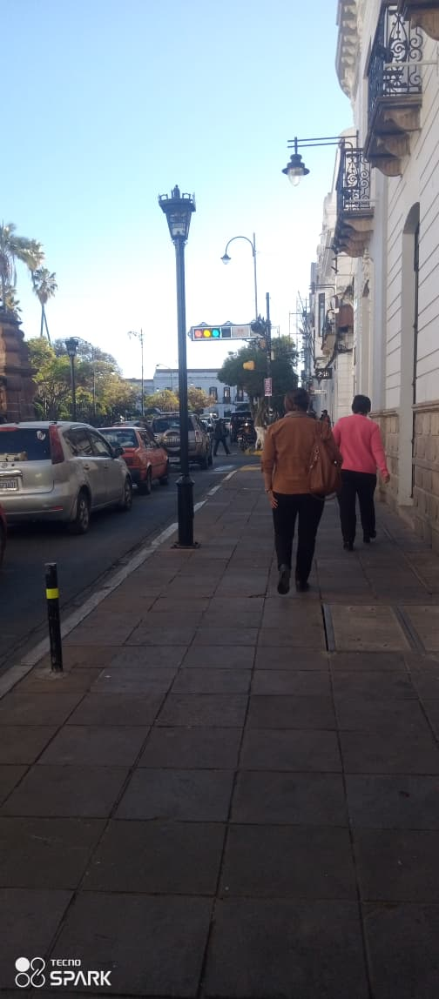

Mi Ciudad = Sucre

Vivo actualmente en la ciudad Blanca Sucre la Capital Constitucional de Bolivia conocid por sus edificaciones coloniales pintadas de blanco.
Lugares que me gustan
- Plaza 25 de Mayo
- Recoleta
- Parque Bolívar
- Universidad San Francisco Xavier de Chuquisaca
Clima
Sucre tiene un clima templado ideal para recorrer sus calles empedradas y disfrutar de su arquitectura.